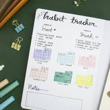
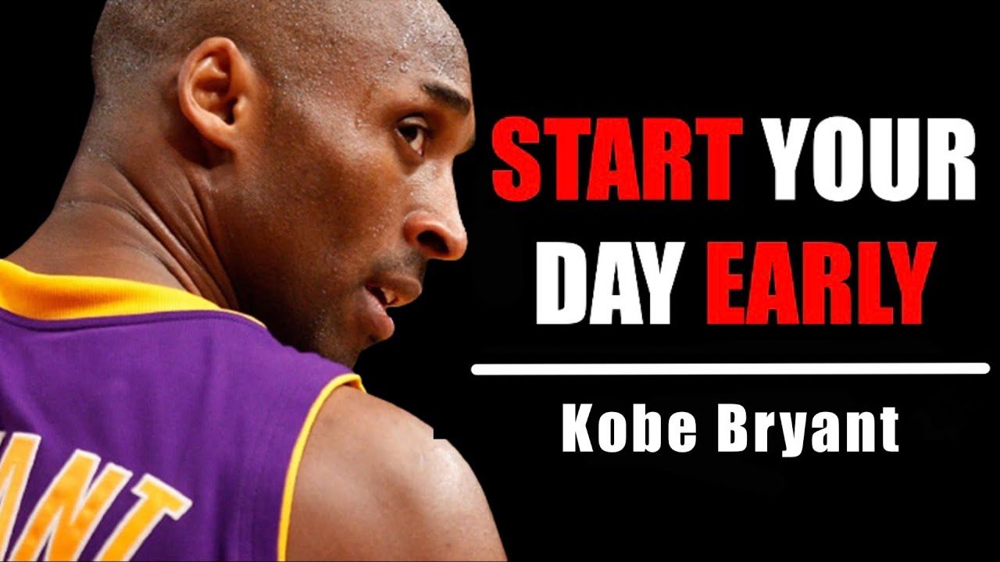

You Are Your Only Competition
"The only person you should try to be better than is the person you were yesterday."
We live in a world that constantly encourages us to look sideways and measure our lives against others. Your social media feeds show everyone's "best life." It is an indirect pressure to climb the career ladder faster than our friends. It is easy to feel like life is just one giant race. We're taught to measure our worth by comparison with others.
But here's the truth: comparing your "behind-the-scenes" life to someone else's polished highlight reel is a fast track to disaster. The most successful people aren't trying to compare and compete; they try to learn from others.
The Problem with Watching Everyone Else
When you focus on others, their goals become your limits. If they slow down, you'll probably slow down too — even if you could go much faster. Indirectly, by following others, you gave your life's steering wheel to them.
When you watch everyone, you will:
- Have a Wobbly Self-Esteem — You feel great when you win, but you will still feel like a failure the moment a friend gets a promotion or a house before you do.
- Chase the Wrong Things — You might end up in auto mode working on goals that weren't yours to start with. All just because you want to "win" at what everyone else is doing.
- Hit a Ceiling — Once you're the "best" in your small group, you might stop trying. You will end up like a fish which grows according to the size of the pond.
The Magic of "You vs. You"
Think about it this way: if you improve by just 1% every day, you'll be vastly better by the end of the year. You stop asking "Am I better than them?" and start asking:
- Did I handle that stressful situation better than I did last month?
- Am I more focused today than I was yesterday?
- Am I being more consistent with my habits?
When you compete with yourself, you aren't fighting for a "slice of the pie." You're learning how to make the whole pie bigger. You can finally be honest about your mistakes because you aren't afraid of looking "weak" in front of a rival. Your mistakes just become helpful data points for your own growth.
Why This Makes You a Better Peer
One of the best side effects of self-competition is that it actually makes your relationships better. You should look at others not to compete but to learn — when they succeed, use that as inspiration for your own journey. When you do this, your friends will stop being hurdles in your way and will start being teammates. You can genuinely cheer for others because their success doesn't take anything away from yours.
How to Start Racing Yourself
Changing your mindset doesn't happen overnight, but you can start with a few simple steps:

- Keep a "Growth Log": Don't just look at where you want to be; look at where you've been. Write down your small wins. Seeing the progress you've made over six months is way more motivating than looking at someone else's Instagram.
- Focus on "Personal Bests": Treat your life like an athlete treats their sport. It doesn't matter who won the gold medal if you just ran your fastest time ever. That's a win.
- Define Your Own Success: Take a second to think about what you actually want. Not what your parents want or what looks good on a resume. If you're hitting your own goals, you're winning — regardless of what anyone else is doing.
- Mute the Noise: If following certain people makes you feel "behind," it's okay to unfollow or mute them. Protect your focus.
Self-discipline is the highest form of care that you can show yourself. It will keep you rooted to your ground.
Lessons from the Greats
To see how this works in practice, look at three people who became icons by obsessing over their own growth rather than their rivals:

- Kobe Bryant: His "Mamba Mentality" wasn't about being better than other players; it was about showing up at 4:00 AM to see if he could push his own body further than he did the day before.
- Marcus Aurelius: As a Roman Emperor, he had no rivals. He spent his life competing against his own ego and temper, using his journals to track his progress in becoming a kinder, more disciplined person.
- Serena Williams: Even when she was clearly the best in the world, she studied her own films to find tiny flaws no one else noticed. She proved that when you are your own benchmark, there is no such thing as "good enough."
The Mirror Is the Only Test That Matters
At the end of the day, other people aren't your benchmarks. They are just people on their own paths, dealing with their own struggles that you probably can't see.
The best feeling in the world isn't standing on a podium looking down at the people you beat. It's that quiet moment of realisation when you look in the mirror and see that you've become the person you once thought you could never be. That is the only victory that lasts.